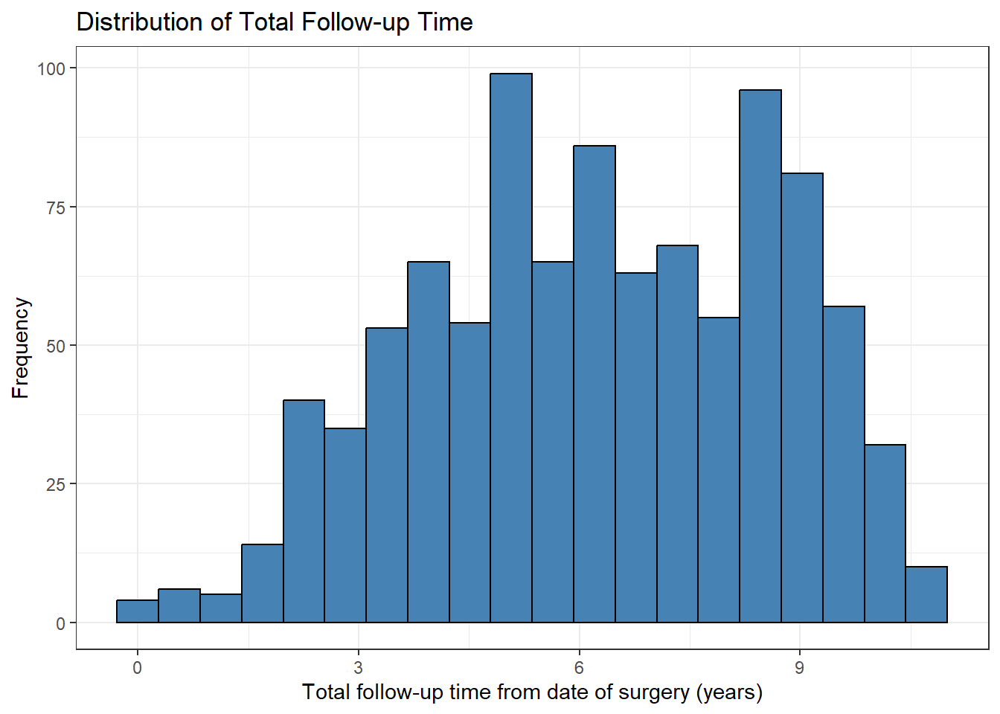
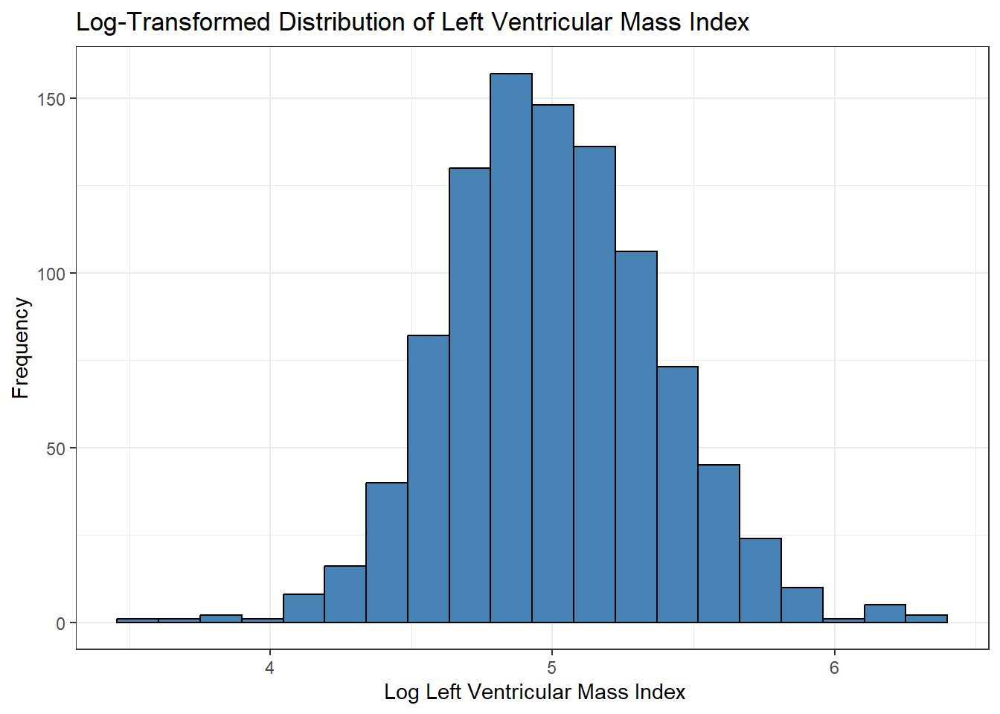
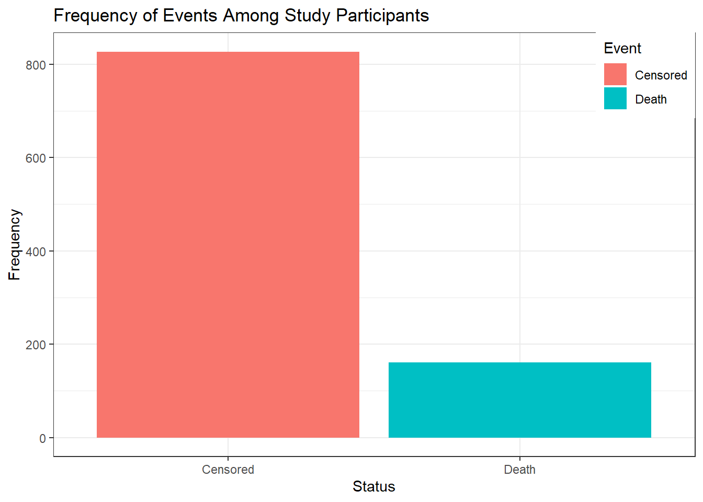
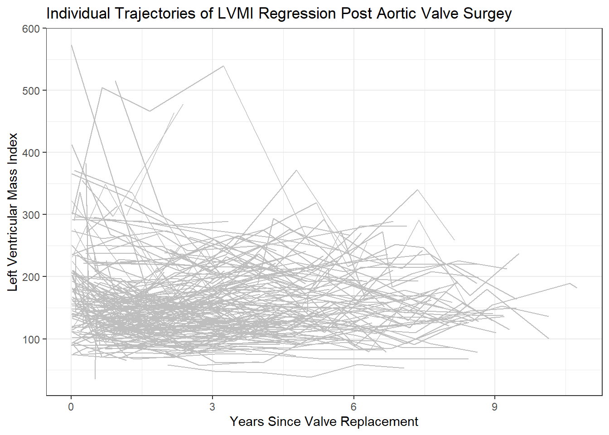
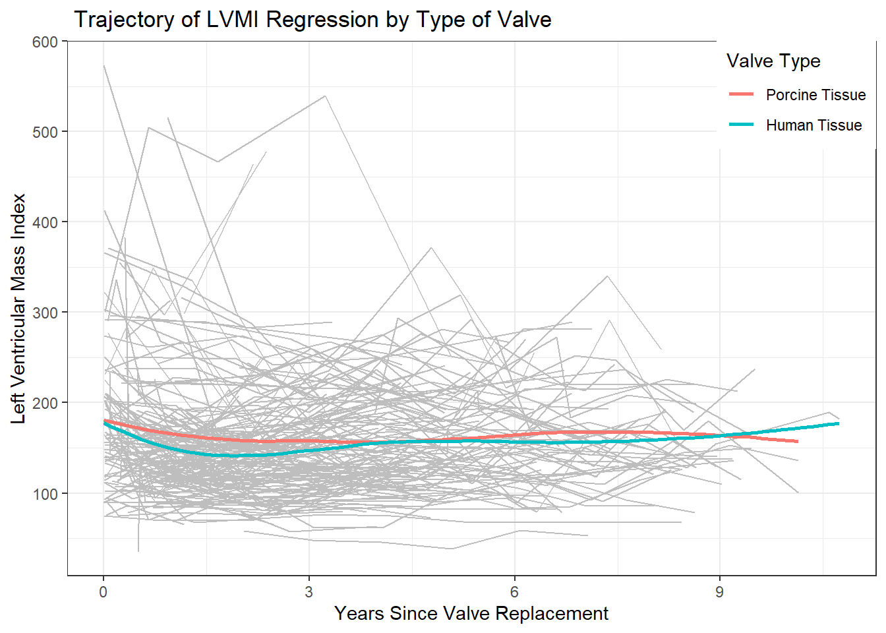

library(tidyverse)
library(haven)
library(finalfit)
library(gtsummary)
theme_set(theme_bw())FINAL PROJECT- PART ONE
heart_df <- read.table("aortic_valve.dat",header = TRUE)
heart_df %>% head()| id | futime | status | time | lvmi | age | sex | redo | emerg | dm | type |
|---|---|---|---|---|---|---|---|---|---|---|
| 1 | 4.956 | 0 | 0.011 | 118.98 | 75 | 0 | 0 | 0 | 0 | 2 |
| 1 | 4.956 | 0 | 3.679 | 118.98 | 75 | 0 | 0 | 0 | 0 | 2 |
| 1 | 4.956 | 0 | 4.696 | 137.63 | 75 | 0 | 0 | 0 | 0 | 2 |
| 2 | 9.663 | 0 | 6.364 | 114.93 | 46 | 0 | 1 | 0 | 0 | 1 |
| 2 | 9.663 | 0 | 7.304 | 109.80 | 46 | 0 | 1 | 0 | 0 | 1 |
| 2 | 9.663 | 0 | 8.301 | 157.40 | 46 | 0 | 1 | 0 | 0 | 1 |
heart_df %>%
summarise(subjects = n_distinct(id))| subjects |
|---|
| 256 |
heart_df %>%
ggplot(aes(x =futime))+
geom_histogram(fill = "steelblue",color = "black",bins = 20)+
labs( x= "Total follow-up time from date of surgery (years)",
y = "Frequency",
title = "Distribution of Total Follow-up Time")
df <- heart_df %>%
mutate(
age = age %>% ff_label("Age(years)"),
sex = if_else(sex ==0,"Male","Female") %>%
fct_relevel("Female") %>%
ff_label("Sex"),
redo = if_else(redo ==0,"No","Yes") %>%
fct_relevel("No") %>%
ff_label("Previous Cardiac Surgery"),
emerg = if_else(emerg == 0,"Elective","Emergent") %>%
fct_relevel("Elective") %>%
ff_label("Operative Urgency"),
dm = if_else(dm ==0,"No","Yes") %>%
fct_relevel("No") %>%
ff_label("Preoperative Diabetes"),
type = if_else(type ==1,"Human Tissue","Porcine Tissue") %>%
fct_relevel("Porcine Tissue") %>%
ff_label("Type of Valve"),
lvmi =lvmi %>% ff_label("LVMI"),
futime = futime %>% ff_label("Follow-up Time(years)"),
status = if_else(status == 0,"Censored","Death") %>%
fct_relevel("Censored") %>%
ff_label("Status")
)df %>% select(-c(time,id)) %>%
tbl_summary(
statistic =
list(all_categorical() ~ "{n} ({p}%)",
all_continuous() ~ "{mean} ({sd})"),
digits = list(all_categorical() ~ 0,
all_continuous() ~ 0),
) %>%
#add_overall() %>%
bold_labels() %>%
italicize_levels() %>%
modify_footnote(update = all_stat_cols() ~
"*mean(standard deviation) for continuous; n(%) for categorical*")| Characteristic | N = 9881 |
|---|---|
| Follow-up Time(years) | 6 (2) |
| Status | |
| Censored | 827 (84%) |
| Death | 161 (16%) |
| LVMI | 160 (65) |
| Age(years) | 65 (12) |
| Sex | |
| Female | 285 (29%) |
| Male | 703 (71%) |
| Previous Cardiac Surgery | 93 (9%) |
| Operative Urgency | |
| Elective | 900 (91%) |
| Emergent | 88 (9%) |
| Preoperative Diabetes | 46 (5%) |
| Type of Valve | |
| Porcine Tissue | 531 (54%) |
| Human Tissue | 457 (46%) |
| 1 mean(standard deviation) for continuous; n(%) for categorical | |
df %>% select(-c(time,id)) %>%
tbl_summary(by = type,
statistic =
list(all_categorical() ~ "{n} ({p}%)",
all_continuous() ~ "{mean} ({sd})"),
digits = list(all_categorical() ~ 0,
all_continuous() ~ 0),
) %>%
add_overall() %>%
bold_labels() %>%
italicize_levels() %>%
modify_spanning_header(
update = all_stat_cols() ~ "**Type of Valve**"
) %>%
modify_footnote(update = all_stat_cols() ~
"*mean(standard deviation) for continuous; n(%) for categorical*")| Characteristic | Type of Valve | ||
|---|---|---|---|
| Overall, N = 9881 | Porcine Tissue, N = 5311 | Human Tissue, N = 4571 | |
| Follow-up Time(years) | 6 (2) | 6 (2) | 6 (2) |
| Status | |||
| Censored | 827 (84%) | 403 (76%) | 424 (93%) |
| Death | 161 (16%) | 128 (24%) | 33 (7%) |
| LVMI | 160 (65) | 164 (63) | 155 (68) |
| Age(years) | 65 (12) | 69 (9) | 59 (13) |
| Sex | |||
| Female | 285 (29%) | 152 (29%) | 133 (29%) |
| Male | 703 (71%) | 379 (71%) | 324 (71%) |
| Previous Cardiac Surgery | 93 (9%) | 28 (5%) | 65 (14%) |
| Operative Urgency | |||
| Elective | 900 (91%) | 471 (89%) | 429 (94%) |
| Emergent | 88 (9%) | 60 (11%) | 28 (6%) |
| Preoperative Diabetes | 46 (5%) | 29 (5%) | 17 (4%) |
| 1 mean(standard deviation) for continuous; n(%) for categorical | |||
df %>%
ggplot(aes(x = lvmi))+
geom_histogram(fill = "steelblue",color = "black",bins = 20)+
labs(x = "Left Ventricular Mass Index",
y = "Frequency",
title = "Distribution of Left Ventricular Mass Index")
df %>%
ggplot(aes(x = log(lvmi)))+
geom_histogram(fill = "steelblue",color = "black",bins = 20)+
labs(x = " Log Left Ventricular Mass Index",
y = "Frequency",
title = "Log-Transformed Distribution of Left Ventricular Mass Index")
df %>%
ggplot(aes(x = status))+
geom_bar(aes(fill = status))+
labs(x = "Status",
y = "Frequency",
title = "Frequency of Events Among Study Participants",
fill = "Event")+
theme(legend.position = c(1,1),legend.justification = c(1,1))
df |>
ggplot()+
geom_line(aes(group = id,x =time, y= lvmi),color = "grey",alpha = 1)+
labs(x = "Years Since Valve Replacement",
y = "Left Ventricular Mass Index",
title = "Individual Trajectories of LVMI Regression Post Aortic Valve Surgey")
lvmi_summary_status <- df %>%
group_by(status,time) %>%
summarise(mean_lvmi = mean(lvmi))df |>
ggplot()+
geom_line(aes(group = id,x =time, y= lvmi),color = "grey",alpha = 1)+
geom_smooth(data = lvmi_summary_status,aes(group = status, x= time, y = mean_lvmi,color = status),se = FALSE)+
labs(x ="Years Since Valve Replacement",
y = "Left Ventricular Mass Index",
title = " Trajectory of LVMI Regression Post Aortic Valve Replacement Surgery by Event",
color = "Event Status")+
theme(legend.position = c(1,1),legend.justification = c(1,1))
lvmi_summary_type <- df %>%
group_by(type,time) %>%
summarise(mean_lvmi = mean(lvmi))df |>
ggplot()+
geom_line(aes(group = id,x =time, y= lvmi),color = "grey",alpha = 1)+
geom_smooth(data = lvmi_summary_type,aes(group = type, x= time, y = mean_lvmi,color = type),se = FALSE)+
labs(x ="Years Since Valve Replacement",
y = "Left Ventricular Mass Index",
title = " Trajectory of LVMI Regression by Type of Valve",
color = "Valve Type")+
theme(legend.position = c(1,1),legend.justification = c(1,1))
df %>% select(-c(time,id)) %>%
tbl_summary(by = type,
statistic =
list(all_categorical() ~ "{n} ({p}%)",
all_continuous() ~ "{mean} ({sd})"),
digits = list(all_categorical() ~ 0,
all_continuous() ~ 0),
) %>%
add_overall() %>%
bold_labels() %>%
italicize_levels() %>%
modify_spanning_header(
update = all_stat_cols() ~ "**Type of Valve**"
) %>%
modify_footnote(update = all_stat_cols() ~
"*mean(standard deviation) for continuous; n(%) for categorical*")| Characteristic | Type of Valve | ||
|---|---|---|---|
| Overall, N = 9881 | Porcine Tissue, N = 5311 | Human Tissue, N = 4571 | |
| Follow-up Time(years) | 6 (2) | 6 (2) | 6 (2) |
| Status | |||
| Censored | 827 (84%) | 403 (76%) | 424 (93%) |
| Death | 161 (16%) | 128 (24%) | 33 (7%) |
| LVMI | 160 (65) | 164 (63) | 155 (68) |
| Age(years) | 65 (12) | 69 (9) | 59 (13) |
| Sex | |||
| Female | 285 (29%) | 152 (29%) | 133 (29%) |
| Male | 703 (71%) | 379 (71%) | 324 (71%) |
| Previous Cardiac Surgery | 93 (9%) | 28 (5%) | 65 (14%) |
| Operative Urgency | |||
| Elective | 900 (91%) | 471 (89%) | 429 (94%) |
| Emergent | 88 (9%) | 60 (11%) | 28 (6%) |
| Preoperative Diabetes | 46 (5%) | 29 (5%) | 17 (4%) |
| 1 mean(standard deviation) for continuous; n(%) for categorical | |||